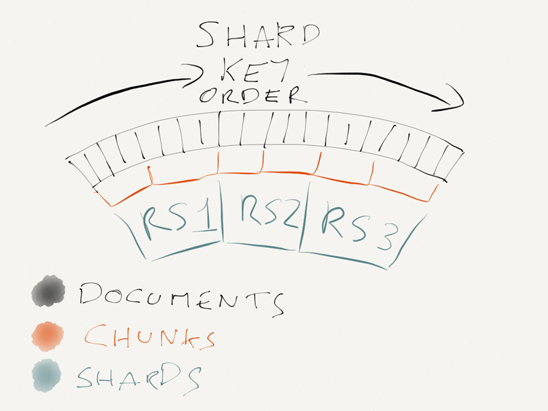

如何选择MongoDB片键？
/ / 点击 /本文探讨了如何合理设置MongoDB片键以发挥分片机制的优势
英文出处：https://bugsnag.com/blog/mongo-shard-key
简而言之，使用 {_id: ‘hashed’} 或 {projectId: 1, _id: 1} 来作为片键。
几个月前，我们对MongoDB集群进行分片(shard)处理，数据设置了两个副本集合(replica set)。上周，我们添加了一个新的分片。首次分片花了一些功夫，不过我们仍然在没有停机的情况下完成了这个工作，如今添加一个新的分片是很轻而易举的事情。
MongoDB的分片是如何工作的？
MongoDB的分片机制能够帮助你将你的数据库划分到多个服务器，通常在生产环境中可以将数据集划分到多个副本集中。但分片最好在数据库建立早期划分，因为一旦你的数据大于512GB那么分片划分就不是那么容易了。这受到MongoDB纵向扩展能力的限制。
为了实现分片，你必须向MongoDB指定使用哪个索引作为片键，然后MongoDB会根据你的设置将你的数据划分到有着相同片键的数据块(Chunk)中。而后这些数据块将根据片键的大致顺序分散到副本集中。

如何选择MongoDB片键
正如你所见，分片之后数据的存放位置依赖于片键，所以合理的选择片键十分重要。
怎样设置一个好的片键 ( shard key )
MongoDB的内部机制保证了每个副本集(RS)包含了同样数量的块，在上图中一个RS包含两个块，而在Bugsnag.com的集群中，每个RS包含6300个块。但这几乎是唯一的保证机制了。
片键的选择决定了三个重要的方面：
- 读和写的分布
其中最重要的一点是读和写的分布。如果你总是朝一台机器写，那么这台机器将会成为写瓶颈，则你的集群的写性能将会降低。这无关乎你的集群有多少个节点，因为所有的写操作都只在一个地方进行。因此，你不应该使用单调递增的_id或时间戳作为片键，这样将会导致你一直往最后一个副本集中添加数据。
相类似的是如果你的读操作一直都在同一个副本集上，那么你最好祈求你的任务能在机器内存所能承受的范围之内。通过副本集将读请求划分开能够使你的工作数据集大小随着分片数线性扩展。这样的话你能够将负载压力均分到各台机器的内存和磁盘之上。
- 数据块的大小
其次是数据块的大小。MongoDB能够将大的数据块划分成更小的，但这种情况仅仅在片键不同的情况下发生。如果你有巨量的数据文档都使用了同样的片键，那么你相应的会得到巨大的数据块。出现巨大块是非常不好的，不仅仅因为它会导致数据的不平均分布，还因为一旦这个数据块的大小超过某个值，那么你就不能够在分片之间移动它了。
- 每个查询命中的分片数目
最后一点，如果能够保证大部分的查询请求都能够命中尽可能少的分片那就最好了。对于一个查询请求来说，其延迟直接取决于最慢的那个命中服务器的延迟；所以你命中的分片越少，那么理论上来说查询将会越快。这一点并不是硬性的规定，不过如果能够做到充分考虑那么应该是很有利的。因为数据块在分片上的分布仅仅是近似的遵循片键的顺序，而并不是严格的强制指定。
好的片键( shard key )设置方案
上面说了这么多，那么怎么才能设计一个好的片键呢？
Hashed id
作为第一个方案，你可以使用数据文档_id的哈希作为片键。
1 | db.events.createIndex({_id: 'hashed'}) |
这个方案能够是的读和写都能够平均分布，并且它能够保证每个文档都有不同的片键所以数据块能够很精细。
似乎还是不够完美，因为这样的话对多个文档的查询必将命中所有的分片。虽说如此，这也是一种比较好的方案了。
多租户混合索引(Multi-tenant compound index)
如果想击败哈希索引模式，那么你需要将关联的文档在索引中尽可能聚集在一起的方法。在Bugsnag，我们通过project聚合文档，因为在我们的业务场景中，我们的app大部分的查询请求都在project范围内。所以对于你的app来说你得指定适合你的聚合方式。
但是我们不能简单地使用projectID作为片键，因为那会导致巨大块的产生，所以我们引入了_id来将大project打散到多个块中。这些打散的块仍旧是索引连续的，所以仍然会分布在用一个分片上。
1 | db.events.createIndex({projectId: 1, _id: 1}) |
这个方案很适合我们，因为对于一个project来说，读和写几乎是独立于project存在时间的，并且旧的project通常都会被删除掉。如果情况改变，我们可能会看到在新的project会有微小的负载上升情况。
为了避免这种问题，我们未来可能会在当MongoDB支持哈希值的混合索引之后，将索引设置为{projectId: ‘hashed’, _id: 1}。相关文档(SERVER-10220)
总结
找一个好的片键是很难的，不过这真的只有两种方案。如果在应用中找不出一个好的聚合键，那么对_id做哈希吧。如果你能够找到，那么将它与_id聚合以避免巨大块的产生。请记住无论你使用何种聚合键，它都需要能够将读和写平均分布以充分利用集群中的每个节点。